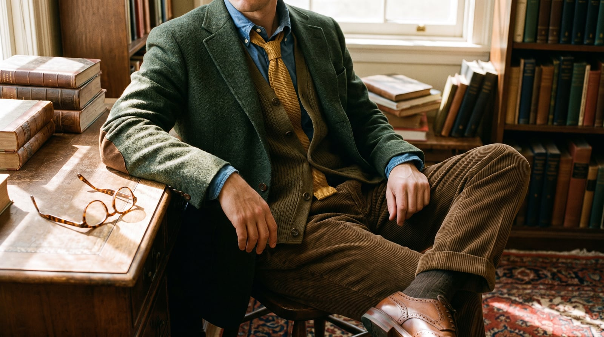
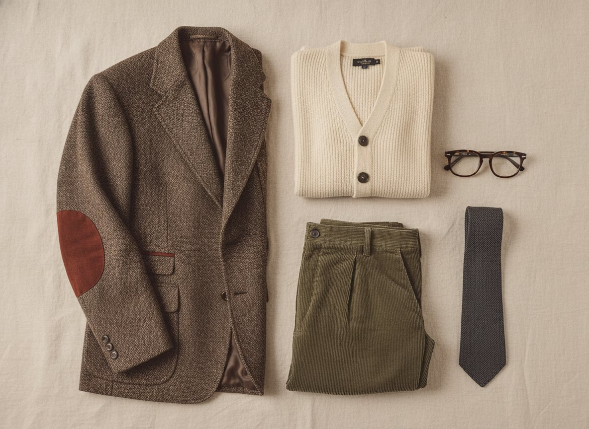
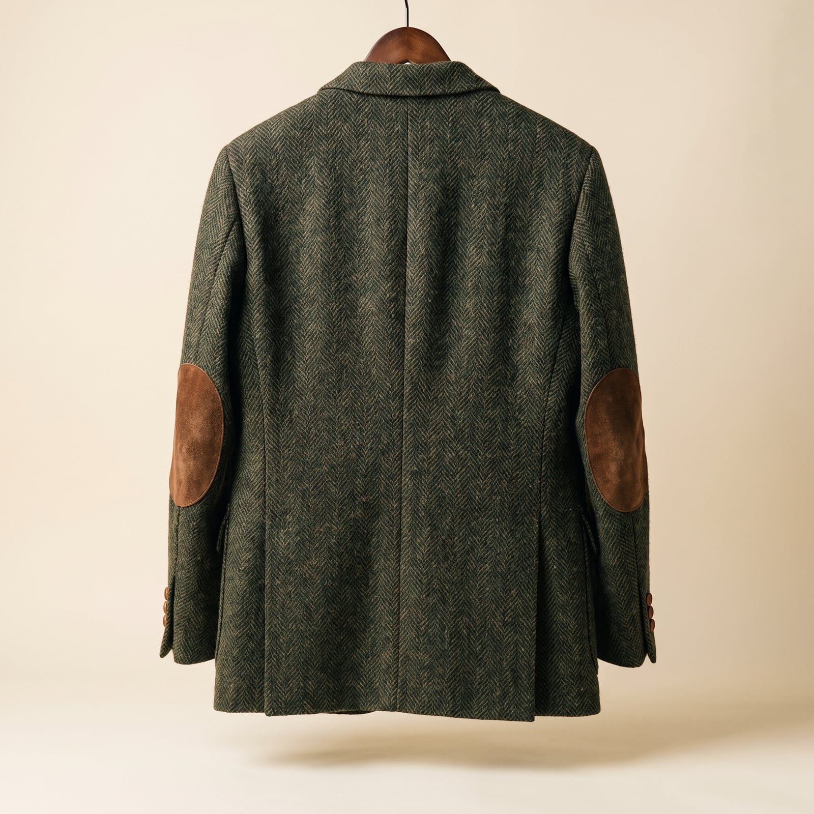
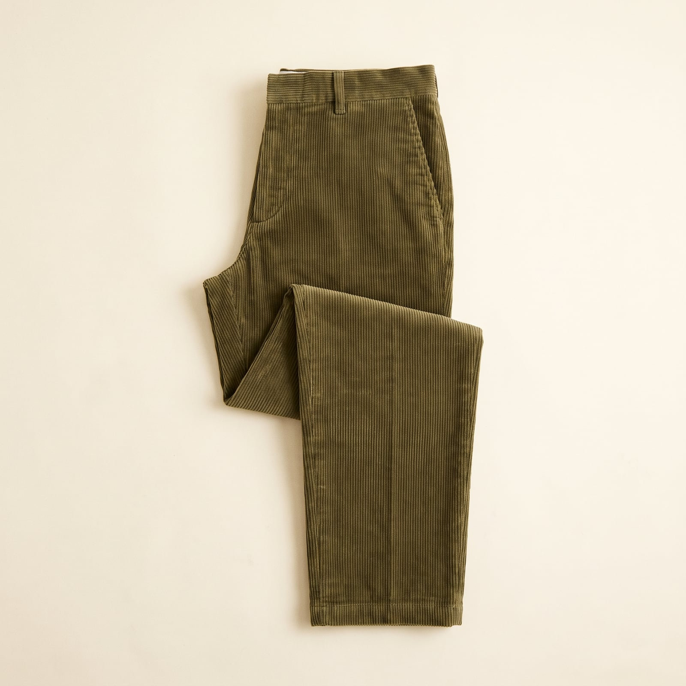
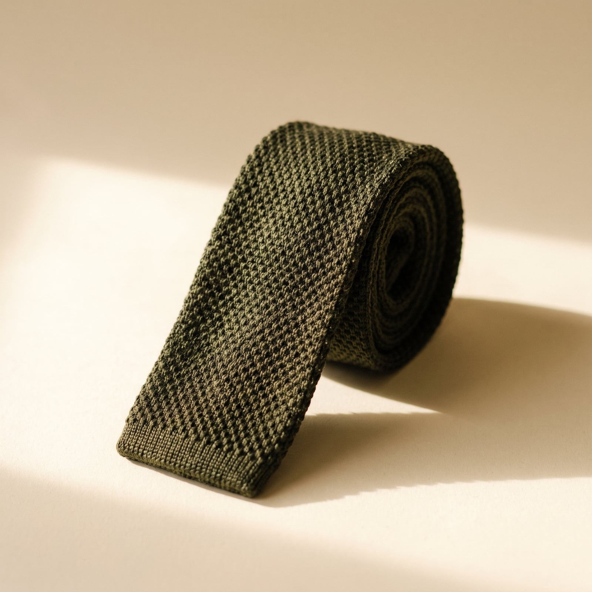
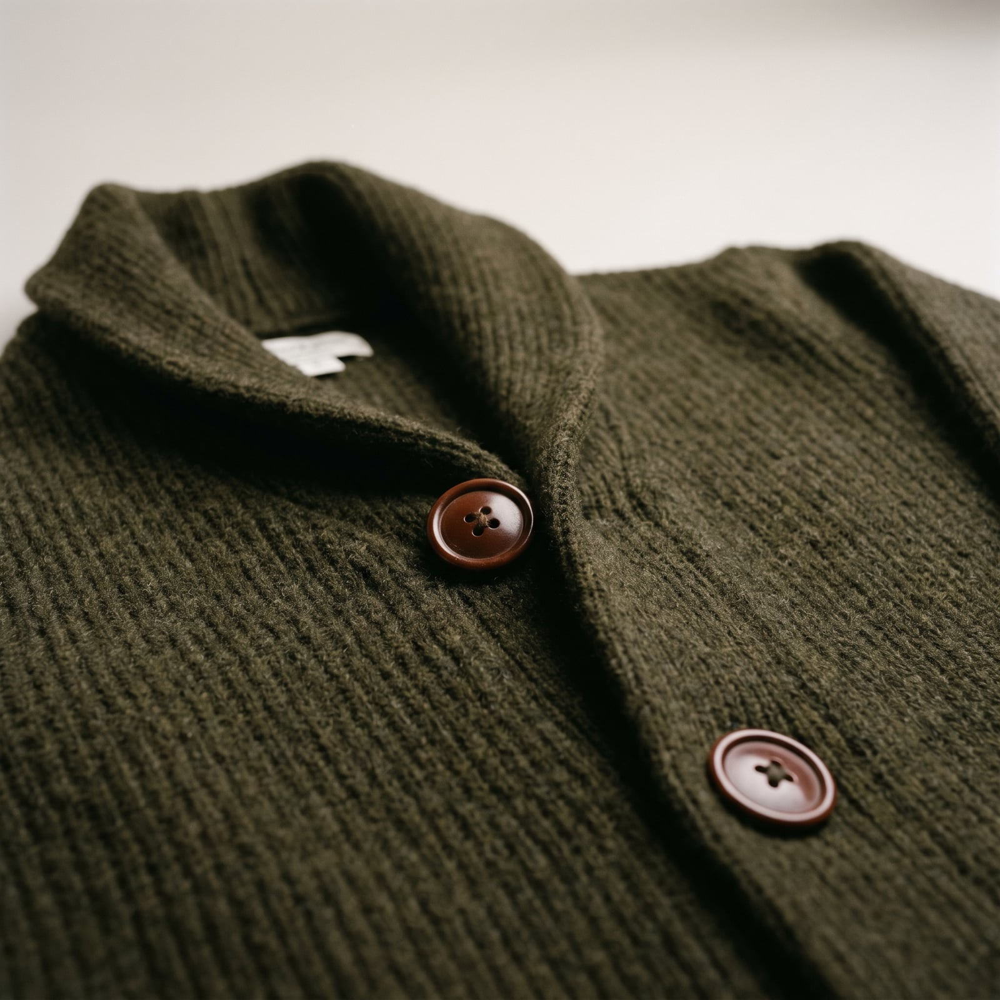
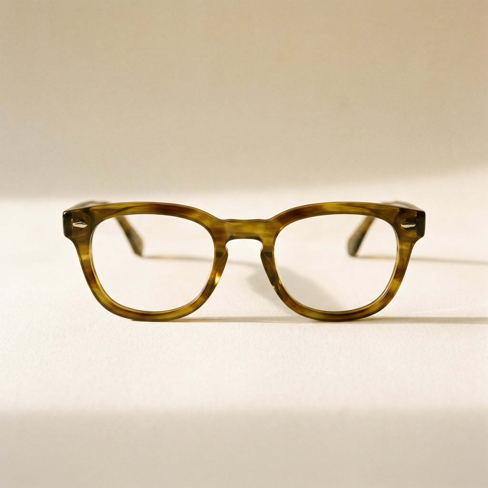

The Professor
The donnish look descends from the same tweed-and-wool tradition as the country estate, but redirected indoors — from the moor to the lecture hall, from Barbour's Britain to Oxbridge's, and eventually to the American liberal-arts campus, where it took on a slightly more rumpled, elbow-patched informality of its own. It's less a designed style than an occupational uniform that calmed into an aesthetic: tweed jackets bought to last decades, corduroy that could survive a chalk tray, a knit tie loosened by 3 p.m.
The trademark features are all about durability under gentle intellectual wear: leather or suede elbow patches sewn on before the elbows actually gave out, a jacket with enough room for a book in the pocket, a general indifference to whether the trousers match the jacket, because they were never trying to be a suit in the first place.
It suits people who take ideas more seriously than appearances and want their clothes to reflect exactly that hierarchy — comfortable enough to think in, durable enough to forget about, textured enough to look interesting in a black-and-white author photo. There's a real warmth to it: this is a wardrobe built by someone who expects to be in the same room, doing the same work, for a very long time.
- Tweed jackets with leather or suede elbow patches
- Corduroy trousers, chosen for durability over sharpness
- Knit ties, loosened rather than removed by mid-afternoon
- Cardigans worn as a second jacket, not an undergarment
- Horn-rimmed glasses and a general indifference to matching

The Tweed Jacket with Elbow Patches
The elbow patch started as a genuine repair — sewn on once decades of leaning on a lectern or desk wore through the original cloth — and became a design feature only after tailors realized customers wanted the patches on jackets that hadn't worn through yet.
The silhouette and patches at an accessible price, in a wool blend.
Shop this →Genuine heavy tweed with real elbow-patch construction.
Shop this →Full canvas construction in a named-mill tweed, patches added by hand.
Shop this →
The Corduroy Trouser
Corduroy's wide wale became academic uniform partly by accident — it was cheap, warm, and durable enough to survive being sat in for hours at a desk, and its texture read as more considered than a plain wool trouser without costing more.
Fine Italian corduroy cut with the same care as a dress trouser.
Shop this →
The Knit Tie
A soft, square-bottomed knit tie loosens the tweed jacket's formality just enough for a classroom rather than a courtroom — texture doing the work a silk tie's shine would otherwise perform.
Real knitted wool or silk at an accessible price.
Shop this →Custom colors and hand-finished ends.
Shop this →
The Cardigan
The cardigan, named for the Earl of Cardigan who reportedly wore a knitted waistcoat during the Crimean War, became academic outerwear because it layers over a shirt and under a jacket without adding the bulk of a second jacket.
Scottish-milled cashmere or lambswool at the finest gauge the category reaches.
Shop this →
The Horn-Rimmed Glasses
Thick horn or acetate frames became academic shorthand sometime in the mid-20th century, when the same substantial frame that once signaled genuine visual impairment started signaling intellectual seriousness instead.
Genuine acetate frames at a fixed, accessible price with real style range.
Shop this →Better acetate and more distinctive, era-appropriate shapes.
Shop this →Hand-finished acetate or precious-metal detailing at the top of the category.
Shop this →Buy the tweed jacket with elbow patches already there, or have them added early — they're a sign of real, expected wear, not an affectation, and this wardrobe is meant to look like it's been through a few winters already. Let the corduroy trousers wear in and go slightly shapeless at the knee; a crisp crease here looks like a costume, not a habit.
Let the cardigan function as a genuine second jacket, worn indoors and out, rather than as an undergarment hidden beneath something else — it's doing real structural work in this wardrobe.
Don't buy this wardrobe pressed and matching — the whole point is a slightly distracted indifference to coordination, and a too-perfect outfit undercuts the character entirely. A knit tie loosened by mid-afternoon is correct; one still crisply knotted at 5pm looks like it's trying.
This is a lecture-hall and study wardrobe, and it can look under-considered somewhere that calls for real polish — a job interview outside academia, for instance, may read the tweed and patches as careless rather than lived-in. Know which rooms will grant the benefit of the doubt.
The tweed stays home for once -- a linen or seersucker jacket, the corduroy swapped for cotton, but the cardigan somehow still makes an appearance in an over-air-conditioned lecture hall.
The full tweed-and-cardigan system, a heavier overcoat, and a scarf that's been in rotation since graduate school.
An old, slightly battered mac, carried more out of habit than actual need, with an umbrella left in an office somewhere more often than not.
A heavier wool coat, boots that see about six days of actual use a year, and a hat that's more about tradition than warmth.
For a colleague's retirement dinner: the good tweed, an actual tie instead of a knit one, and shoes that have been resoled at least once.

Oxford, a New England college town in autumn, and a research trip to an archive somewhere that quietly doubles as a vacation, expenses permitting.
A trip is judged successful largely by whether a particular manuscript or first edition was actually locatable, with the surrounding city treated as a pleasant bonus.
Everything, constantly, across several books at once, stacked in an order that makes sense to no one else. If pressed, George Eliot, and whatever journal in his own field just published something worth arguing about.
A library card gets more genuine use than most people's gym membership, and an overdue notice is treated as a minor personal failing.
Find it on Amazon →Bach on a Sunday morning, and choral recordings played at a volume that assumes the room is otherwise quiet.
A genuine, decades-long loyalty to whatever radio station still plays classical, defended even as the signal gets worse every year.
Listen on YouTube →Floor-to-ceiling bookshelves that ran out of room years ago, with a second, informal system of stacks colonizing the floor.
A good reading lamp, non-negotiable, and a desk that's more organized than it looks to anyone who hasn't tried to use it themselves.
See more on Pinterest →Crossword puzzles done in ink, without much tolerance for anyone who suggests pencil, and gardening treated as a legitimate form of thinking rather than a chore.
Office hours that run long because the conversation got genuinely interesting, at the expense of whatever was scheduled next.
Learn more →